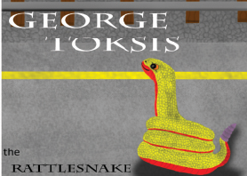

Sidra
Books summaries
Let me take you on a tour of other dimensions that exist in the mind of my youngest daughter. Places and characters as real to her as her family and friends:
- A Way to Understand
- We not who you think we are
- On the same day
Let me take you on a tour of other dimensions that exist in the mind of my youngest daughter. Places and characters as real to her as her family and friends:
The first place on our tour is a land called a way to understand.
This place is very similar to our world, with people who deal with similar problems.
Imagine feeling cut off from someone you want to be friends with, despite sitting two feet
from them every day!
Jacob Venetianer faces this problem when a new student named Kayla Bryd comes to Lakewood
Middle School.
The two would love to become better friends and share their interests, but they have challenges
to overcome:
Jacob is Deaf, and Kayla is blind.
This makes it very difficult for these two to communicate.
Next on our journey, we come to a dimension where animals live with cultures, feelings, and lives that are similar to ours. They also have to deal with many similar issues: bigotry, cultural differences, diversity, and religious stereotyping. In this story, Princess Puffpuffikins III, a young cardinal princess, experiences going outside the castle by herself for the first time. Along the way what she meets an elderly purple fox called Amethyst Purplestar. He warns her about other animals that also live there:
When she meets them she finds them nothing like what the purple fox said they would be.

The Toksis family and the Canidae family are close friends, always spending time together. The dilemma they faced when one year in September the Toksis families invited the Canidae family to an Eid al-Fitr party. There is one little problem. This happened to fall on the same day as Rosh Hashanah!